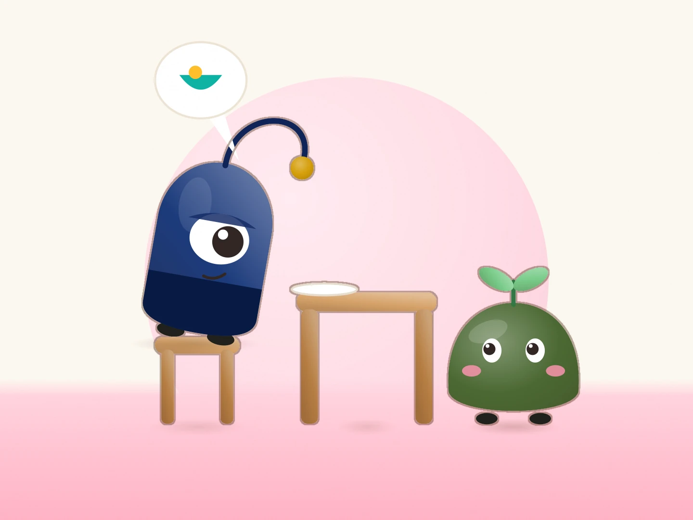
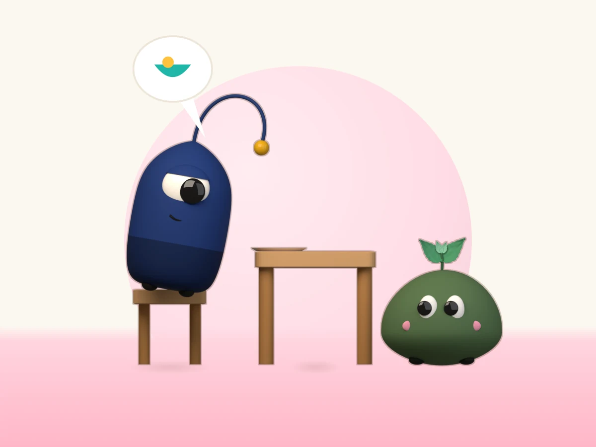
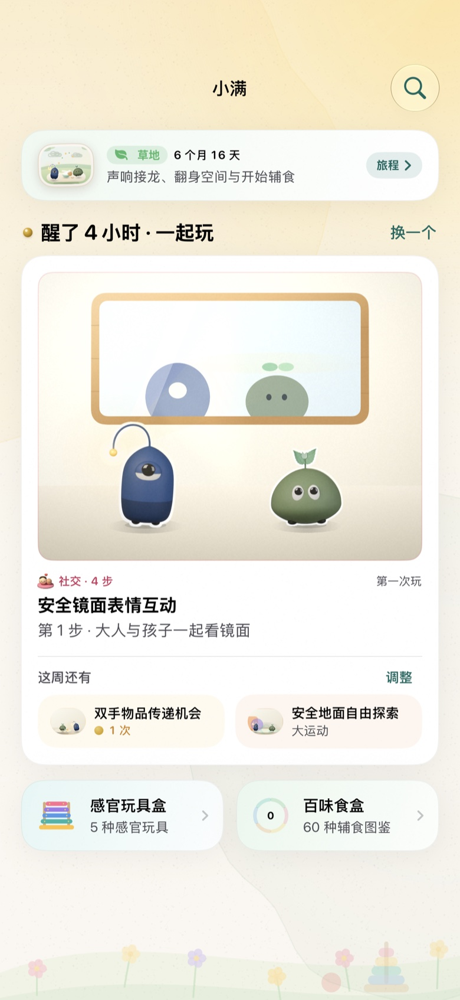

两位不说话的伙伴
住在同一张矮桌旁：「摸索」是孩子伸出手的好奇，「台灯」是大人站在半步之外的光亮。
Moss · 摸索
苔绿色的圆软石头顶冒出两对锯齿薄荷叶，浑圆没有尖角。眨眼很快，闲不住，看见木块或镜子总要凑过去摸一会儿。
看着桌边的 Otto（轻点看动作）Otto · 台灯
深蓝色的高圆顶大眼睛总微微垂着眼皮，偶尔打个长哈欠，弯弯天线末端的金色灯珠从不熄灭。Moss 摸到哪里，光就偏到哪里。
把灯珠照向 Moss（轻点换神态）画面里没有对话气泡，也没有倒计时。一个只管往前摸索，一个只管把光留在这里。
同一场游戏，两套世界
46 个用丝巾、纸杯和木块摆出的家里玩法，可以在立体哑光软陶与水彩剪纸之间随时拉动切换。


3D 软陶 2D 水彩剪纸三十七颗珠子的串珠小路
从第 0 个月到第 36 个月，经过草地、森林小丘与小河村庄；最后一颗珠子之后，小路用虚线接着往前伸。

坐稳伸手与第一勺果泥
双手开始在胸前互相递玩具，小手掌也敲出第一声清脆的手鼓，迎来了百味食盒的最初味道。
- 两只手换着拿同一只圆木杯
- 往前倾身伸手够向几寸外的小铃鼓
- 在食盒里记住今天尝试的蔬菜味道

晚上七点之后，屋里只留一盏小灯
夜里抱哄或喂奶时，应用整页自动沉入柔和的深蓝底色，只亮暖金色光晕。把手机贴近掌心切到「轻拍」，还能以每分钟 60 到 48 拍发出完全零声音的微震节奏，或是叠加细雨敲窗与木琴摇篮。

装进手机里的五个角落
所有绘本故事、桌面玩具、食盒记录与成长册都在设备本地安静运转，打开任意一章就能翻看实机画面。

出版与说明
摸索台灯（Moss & Otto）· iPhone 离线版
还没填宝宝小名和生日，也能先看里面的内容吗？
可以。即使暂不填写资料，0 到 36 个月的全部活动绘本、感官玩具盒和深夜夜灯都可以完整使用，需要记照片或日期时再补充即可。
早产宝宝的月龄怎么对应小路上的站次？
只要在资料页填入出生孕周，应用就会按儿科习惯使用矫正月龄匹配对应月份的活动，不急着对齐足月时间。
换新 iPhone 时怎么保留记录和时光信？
除了通过苹果换机迁移自动还原之外，也可以在「工坊 › 离线数据与备份」导出一份完整档案存在系统文件 App 里，在新设备上点一下即恢复。